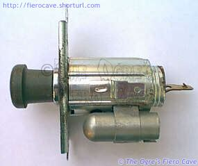
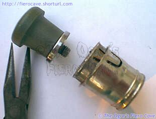
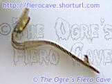
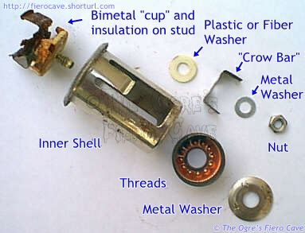

Go Home
Site Map
Go Home
Site Map
Unlighting
Dissecting The Cigarette Lighter
 Like nearly all others used in North American car production, Casco makes the Fiero Cigarette Lighter. (It even bears the Casco stampings.) This means even if you can't get an exact replacement for the Fiero lighter at you local parts store, you can get parts to repair the one you have.
When you pull the lighter assembly from the console, you'll be confronted with the image on the left. You've just uncovered an interesting part of American Automobile Manufacturing. This little device was actually involved in a Supreme Court case. Seems there was allot of heat over some of its design... Ok, no more bad jokes. Wouldn't want to get burned.
Heater Element
 There isn't much to the heater. It's a coil of resistance wire that simply wears out over time.
The heating element can be unscrewed from the knob on nearly all Casco lighters. This includes the Fiero knobs. To fix the element, simply get a new one at any parts store and swap the knobs.
You don't have to go with a stock knob. There are a number of them available thru the aftermarket and from other cars that will work just fine. Feel free to dig around the salvage yards to find one that better suites a custom interior. Don't forget to check other brands of cars. Ford and others use Casco lighters.
Socket To Me...
 However you decide to fix the socket you need to save the positive terminal. (Shown to the Left.) You'll need that to connect any new socket you use. It just screws onto the center terminal of the socket. The outside shell of the new sockets doesn't always have the push on terminal or the lamp but you can simply reuse the Fiero shell if needed. (Personally, I don't even bother with that lamp...) There are other lighted sockets available that you can check out as well.
The rest of the socket is rather interesting. When you push in the lighter, it latches into two bimetal arms. When the arms heat up enough, the lighter pops out ready for use. Here's an expanded view of the lighter socket...
 The parts are laying in the same order they go together.
See that little bent bit between the two small washers. It's a "crow bar" safety device. It is another Bimetal strip and if the socket overheats, the arms spread, short out the socket and blow the fuse. Just like dropping a crow bar across the wires. Not all lighter sockets have it.
The two main things that go wrong in the socket are the bimetal arms and corrosion. The arms (In the upper left corner) eventually get too weak to work anymore. The ash and other crap that collects in there can eat up the whole bottom of the socket. Also, it doesn't take anything large to get between the bimetal and the shell and short the whole mess out. (Especially with the placement of the lighter in Fiero.)
Repairs
Warning: Any time you loosen the nut, you must center the crow bar piece.
I don't smoke but I always keep the lighter working, at least the socket. Even if you don't smoke this is a good idea because you invariably run into something you want to run off it, like a radar detector or air pump. When I did my lighter sometime back, I chose to restore the Fiero lighter. Not sure why really... The light is useless even when it works. A big reason for that is the light hole in the outer shell almost never aligns with the inner shell openings.
That can be fixed but it's a pain. I don't smoke so it wasn't worth the time for me but here's how to do it... Notice the many divots in that copper part next to the big washer above... The trick is to adjust that copper part one way or the other until the two shells line up when tightened. Then the light can get to the inner shell. It takes a bit of trial and error, but that's how it works.
For parts, I just bought a plain heater and socket. I transferred the knobs on the heater. I used the new socket in the Fiero outer shell.
To get the two shells apart, (with it unplugged only!!!!!!) stick a pair of pliers into the socket and spread them so they grab the cutouts. Then you can usually just unscrew it from the outer shell. If you have a rotten one that refuses to unscrew, take off the small nut instead.
When you are putting it back together, note that the mounting bracket has an ear the fits a notch in the outer shell. (The notch is by the lamp holder on the OE shell.) If you are using an aftermarket outer shell, you may need to flatten out that ear.
Because Fiero's lighter is surrounded by plastic, I recommend keeping the safety limiter if you replace the socket. Many sockets from other cars and aftermarket don't have it.
To get the socket apart, hold the latching arms and insulator to the bottom of the socket while unscrewing the nut. That will keep things from spinning. On OE sockets the Nut is usually tight, may even be Locktited so be careful or you'll wreck the ceramic insulator. Aftermarket ones usually come right apart once the nut is loose.
When putting the socket back together, make certain the limiter is centered. If it were off to one side it could activate and blow the fuse before it should, which would be very annoying.
Replacement
You need three parts from the old socket:
- The metal part that mounts the rest of the socket.
- The outer shell gives the ground terminal. (And light socket...)
- The positive terminal.
The rest can be new or used as long as you use the "long" socket. (There is a short version and no, it won't work.)
New part source? Any auto parts store. Ask/check for Casco lighter and it should work.
I recommend you use the safety "crow bar" if you can. In Fiero a small screw, washer, dime, etc, can easily cause a short circuit or the element can overheat if the socket or the element is bad. If the socket gets too hot, it can cause Console damage and even a Fire.
Light
OE Bulb is 194.
Warning: Do Not use a brighter lamp like # 168 bulb. That will create more heat and heat can wreck the consol.
The way this socket is made and location (the lighter and the light) are headaches.
- The "Lighthouse" has a very small hole for light output and this hole is blocked on most sockets.
- When does work, can make glare problem reflect on windshield. Many find this bulb is annoying at best.
If you will not fix the light, a dead bulb in the socket to keep it from getting dirt in the socket and cause a short circuit.
Want brighter or dimmer light? Read above again. Loosening the nut that locks the coper color thread then Adjust the light so the cutout in the inner shell match (brighter), or doesn't match (dimmer), the light hole on the lighthouse. Tighten nut and check.